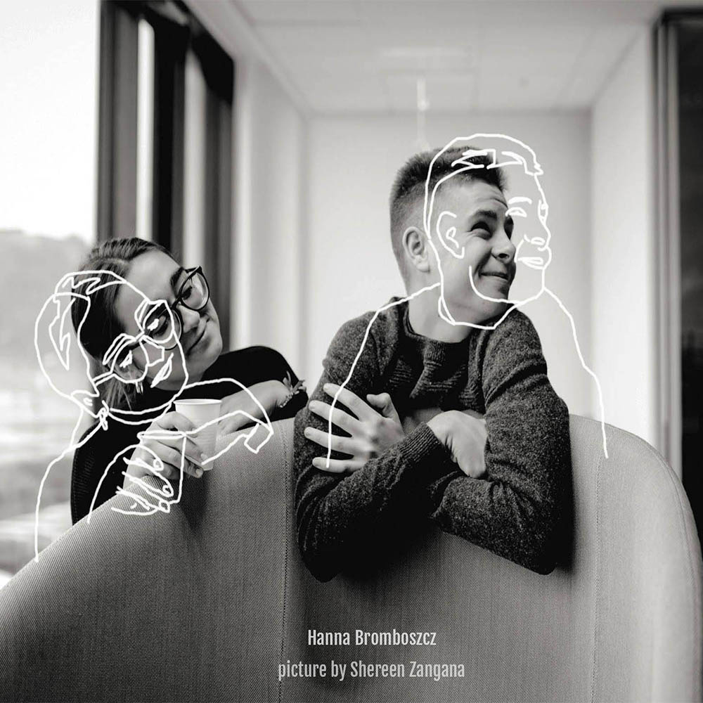
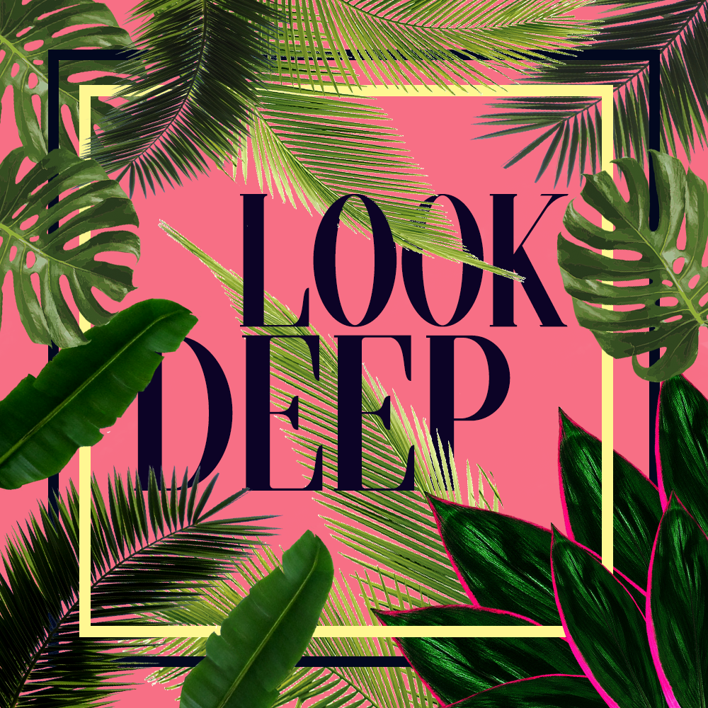
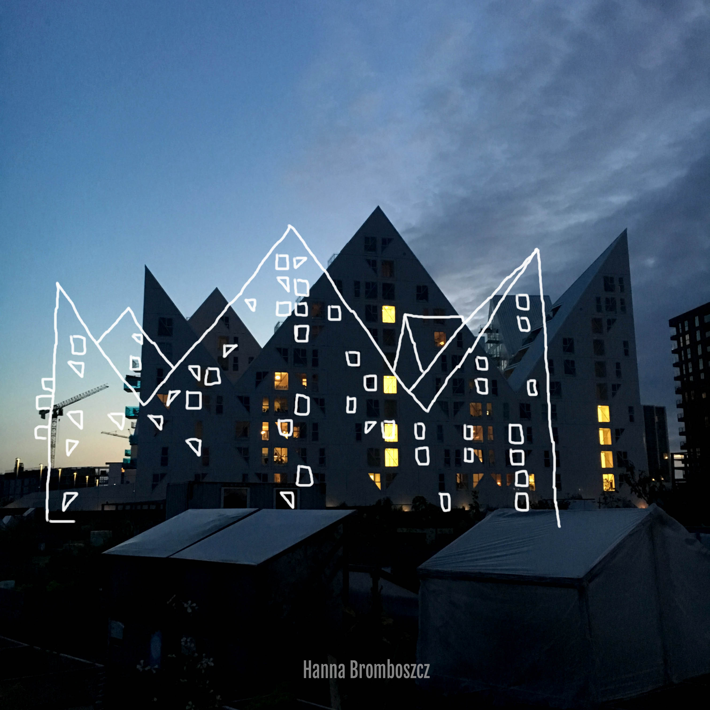
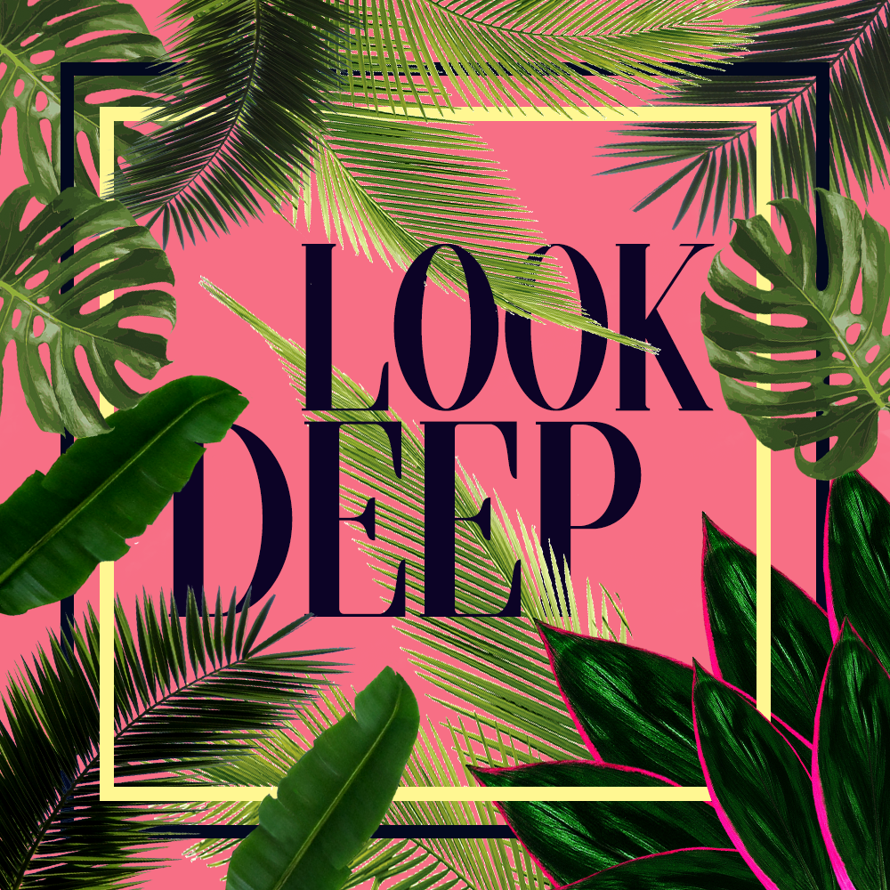
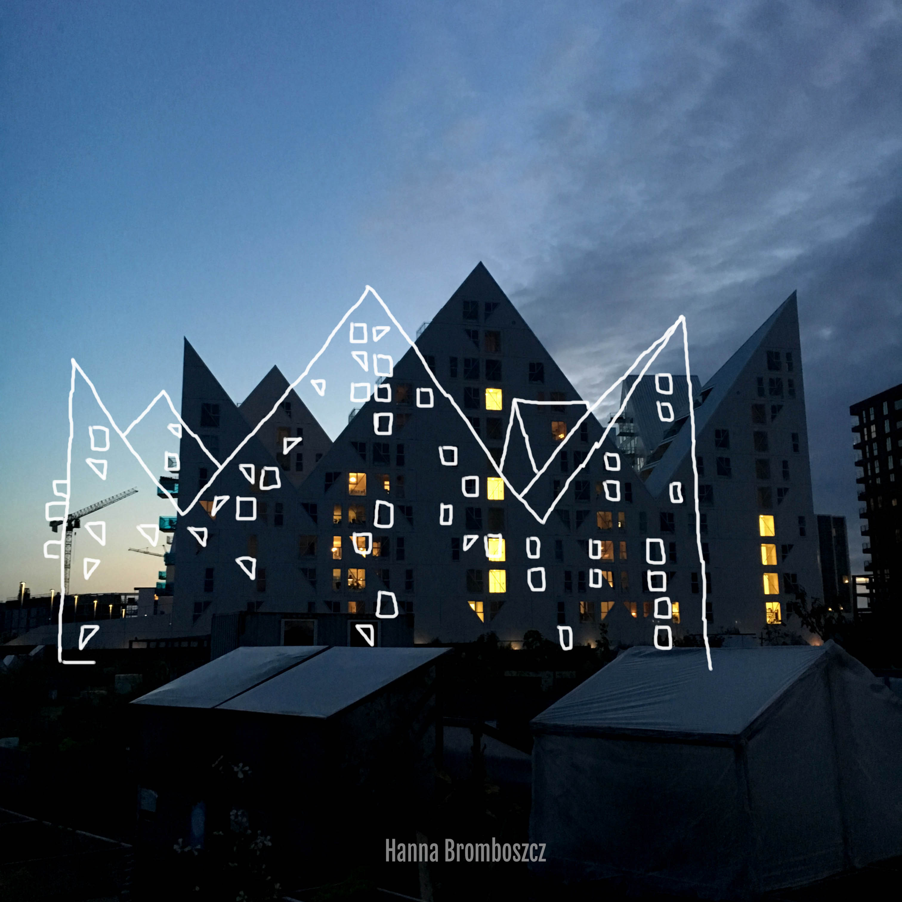

Graphics
I started doing small, simple graphics. To show pictures not just as they are, to show their different side. I am usually inspired by everything what is around me, I see world from different perspective- that’s why I wanted to create something to show this opportunity to those who can’t see this. Doing this I can name myself as visual creator. But those graphics don’t have a story yet. So feel free to create one!
 


